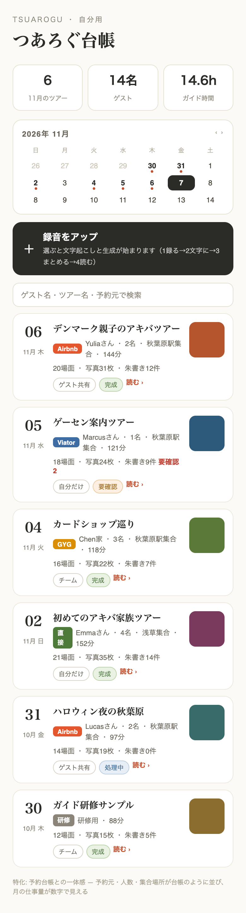
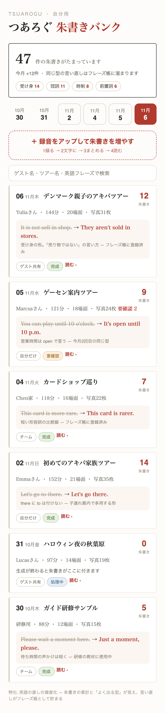
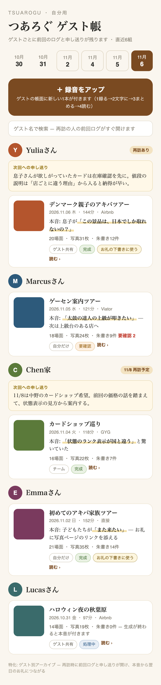
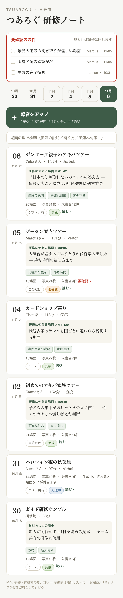
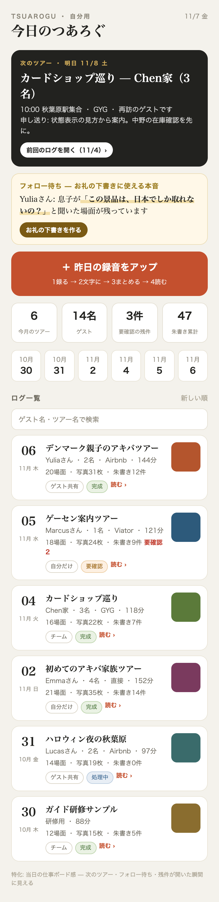

前回選ばれた「案1 Day One風ジャーナル」の骨格（カレンダーの帯＋日付カード＋明朝の読み物感）は全案で保ったまま、日記一般ではなくツアーガイドの仕事道具として磨いた5案です。案ごとに特化の切り口が違います。全案に共通で「録音をアップする入口」「ログ一覧（日付・ゲスト／場面数／写真数／公開範囲／状態）」「検索・絞り込み」「読み物ページへの導線」が入っています。一覧の先頭は実物の Yuliaさん回（2026.11.06）で、残りはモックです。カードをタップすると実寸の案が開きます。

特化: 予約台帳との一体感。予約元（Airbnb／Viator／GYG／直接）・人数・集合場所がカードに並び、月カレンダーと「今月6本・ゲスト14名・14.6時間」の仕事の数字が付く。台帳と日記が1冊になった形。
実寸で開く ›

特化: 英語の直しの資産化。累計47件の朱書きと「受け身14・冠詞11」のよく出る型がトップに見え、各ログには言い直しの実例が引用で付く。直しがフレーズ帳として貯まっていく形。
実寸で開く ›

特化: ゲスト別アーカイブ。ゲストごとに前回ログ・申し送りメモ・再訪バッジがまとまり、ゲストの本音（太字）から翌日のお礼の下書きにつながる。再訪の多いガイドの帳面の形。
実寸で開く ›

特化: 研修・育成での使い回し。要確認は「残件リスト」として上に残り、各ログの場面には「値段の説明」「子連れ対応」の型タグと教材向きの場面ピックアップが付く。現場の記録がそのまま教材になる形。
実寸で開く ›

特化: 当日の仕事ボード感。開いた瞬間に「次のツアー（申し送り＋前回ログへの導線）」「フォロー待ちのお礼ネタ」「要確認の残件数」が見える。朝イチの確認がこの1画面で終わる形。
実寸で開く ›
番号で選んでください。選ばれた案を土台に、管理ページ本体を実装します。これはデザイン案のボードで、本体（kyo-no-koe）には触っていません。